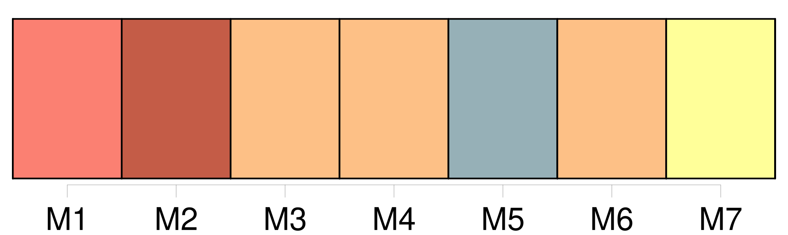
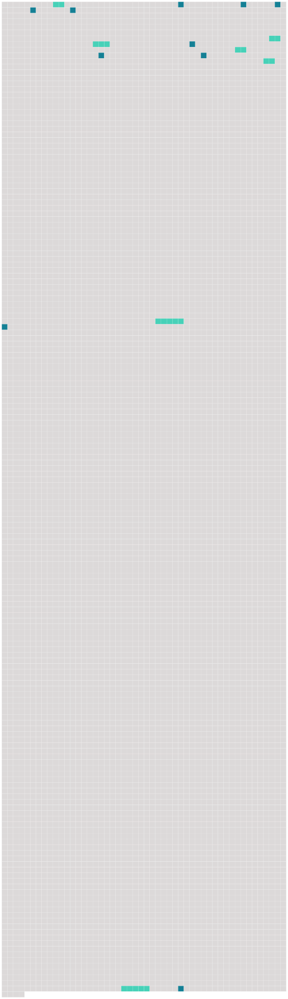

Longueur nb maillons : 17 mentions |
  |
Seul, un peu en arrière de moi, [un homme] parlait à voix basse, et malgré toute mon attention, il me fut impossible de distinguer la moindre de [ses] paroles.
Je comprenais pourtant, à la façon dont [il] appuyait sur les mots qu' [il] donnait des indications précises, et [faisait] des recommandations très importantes. Lorsqu' [il] se tut, une autre voix se fit entendre. [10 phrases]
Je me souvenais seulement des cahots du fiacre qui m'avait amenée à l'hôpital, et de la question directe [du médecin] au vieux cocher : « C'est votre voiture qui lui a passé sur le corps?
[Le même médecin] , penché à présent sur moi me demandait : [2 phrases]
J'étais sûre que c'étaient mon père et ma mère qui s'en allaient ainsi, et malgré la douleur de ma hanche, je voulus me dresser pour les appeler, mais [le médecin] appuya des deux mains sur ma poitrine, en disant :
Penché sur moi, [il] me cachait une partie de la salle, mais dans l'ouverture que formait l'un de [ses] bras, je voyais mes parents gagner la sortie. [4 phrases]
Et tandis que [le médecin] continuait à s'informer de ma souffrance, des larmes se pressèrent en foule sous mes paupières, et malgré moi, jaillirent avec force. [109 phrases]
Ainsi en a décidé [le médecin de l'hôpital] après un dernier examen de mon mal.
À mes parents anxieux des suites de l'accident, [il] a répondu d'un ton sec : [242 phrases]
Dans ma précipitation de marcher sans soutien d'aucune sorte, il y avait surtout la hâte de savoir jusqu'à quel point j'étais infirme, car je n'avais pas oublié les paroles [du médecin de l'hôpital] , ni la sécheresse de [sa] voix qui était comme un blâme à l'adresse de mes parents : « Boiteuse, elle le sera certainement ». |
 |
La ressource peut être téléchargée sur la page Ortolang
Si vous avez des questions ou vous voyez des erreurs, merci d'envoyer un mail à silvia.federzoni89@gmail.com
Site développé par S. Federzoni (contact)